The feel
Frutiger Aero, the look this style is named after, is the corporate tech aesthetic of 2005 to 2013: cool blues, calm greens, airy swooshes, leaves, bubbles and water droplets.1 This page follows its greener side: stock images of sunflower fields under oversaturated blue skies,2 macro shots of petals and dewy blades of grass,1 and the feeling of a time when technology was seen as a path to a brighter future.3
It works because it reassures: LogoLounge's 2004 trend report predicted that companies would have to work harder and harder to reassure customers that they were the good guys.4 That is also the catch: Sofi Lee, who first identified Frutiger Aero, says it was part of greenwashing campaigns,3 and that whether people find it sincere or tongue in cheek reflects how they feel about that time.2 Games turn the promise into play: in Flower you are the wind, and everything you touch, you give life to.5
- reassuring
- dewy
- paper-white
- well-funded
- hopeful
- slightly too sure of itself
Where it comes from
Corporate green was a logo trend by 2003: LogoLounge's report that year called Landor's flower-and-sun mark for BP a seminal effort, and warned that if overplayed, "corporate green will soon become a tired joke to the public".6 GE launched ecomagination on 9 May 2005 with broadcast, print and online advertising,7 and by December the New York Times counted BP, Ford and Exxon Mobil among the big names spending ever more on green adverts.8 Planet Earth let audiences watch rare animals in high definition for the first time in 2006,9 and by 2007 leaves were on web logos almost everywhere.10 Wii Fit's motif turned from blue to green late in development, after it was shown in blue in October 2007,11 Flower blew a petal out of the city in 2009,12 and Free Lives' Terra Nil set players to restore a barren wasteland in 2023.13
Core elements
Machines fused with nature
The signature image fuses industry with living things: GE's 2005 ads showed a tree growing out of a smokestack, and the coils of a jet engine or a power turbine echoing the whorls of a seashell.14 Its two magazine series, one modelled on the famous Audubon prints and one built on reflections and shadows, both showed GE products coexisting in harmony with nature.15
Leaf and water-drop symbols
A few friendly symbols carry the message: by 2007 leaves were on logos almost everywhere, standing for fresh ideas and clean, light design, often in green.10 Anna Öhrling, who runs the creative impact agency Onward, lists the same kit today: all the shades of green, random leaves on a logo, a recycling triangle and a water drop.16
Macro nature photography
The photography goes close and wet: macro shots of flower petals and dewy blades of grass,1 dewdrops and green fields,3 and lush, high-definition photos of plants and animals.2
Grey-to-green restoration
The story is restoration: Flower opens on one flower in a pot in a grey, urban apartment,5 and the wind carries its petal out of the city into a verdant landscape.12 Terra Nil starts on barren, scorched earth,17 and you bring it back with machines such as wind turbines, soil purifiers and irrigators.13
White interfaces with green accents
Wii Fit shows the interface side: its design director swapped a blue motif that lacked punch for green, which works perfectly as a motif for health,11 while most screens, including the Plaza with the family's weight and BMI histories, stayed very white.18 The name itself comes from Adrian Frutiger, whose typeface was popular with computer interfaces and corporate materials of the time.1
Corporate reassurance
Behind it all is a large company promising to be good: LogoLounge's 2004 report saw large corporations taking ownership of green to suggest that they embraced human concerns and the environment, with hands turning into trees in their logos.4 GE's chief executive put the business case plainly: "Increasingly for business, 'green' is green."7
How to do it
Use green on white screens
Pick green for the motif: Wii Fit's design director dropped blue in the final stages of development, worried it lacked punch, and found that green works perfectly as a motif for health.11 Leave most screens very white, and answer their coldness with warm, gentle music, as its composer did.18
Fuse machines with natural forms
For key art, fuse a machine with a living form, like GE's tree growing out of a smokestack or its turbine coils drawn as the whorls of a seashell.14
Restore colour as the player acts
Begin desaturated and return colour as the player acts, the way Flower's grey room grows brighter with each dream you fulfil.5 A saturation adjustment of 1.0 leaves the image as it is and 0.0 turns it fully greyscale, so raise it as the world recovers.19 Show the change where it happens too, like the grass that flows over Terra Nil's barren earth when you place a building.17
Fill fields with instanced grass
Flower's fields have over 200,000 individual blades of grass.20 Draw them with GPU instancing, which renders many copies of one mesh at once.21 A batch of instances is culled as a whole, not blade by blade, so split a big field into several batches by area.22
Animate grass in the wind
In Flower the player becomes the wind,12 so the grass has to move. Animate only the upper vertices of each grass object, which share a v texture coordinate at or near zero, and move them with sine and cosine of their position, the time, and the wind's direction and strength.23 Moving neighbouring vertices almost alike looks too uniform, so add a pseudo-random function in the vertex shader.23
Chart the progress
Wii Fit grew from Shigeru Miyamoto's habit of recording his weight on a graph, and the fondness he felt as the graphs piled up.24 Its Plaza shows the weight, BMI and training histories of up to eight family members.18
Score with calm music
Write music that soothes and gently encourages rather than excites, and match it to the look: Wii Fit's composer found that all-live instruments clashed with the graphics, so he added subtle synthesiser.18 Flower's score is layers of acoustic instrument samples that rise and fall with the player's actions.25
Cheat sheet
Do
- Make the player the force that brings things back to life. In Flower you are the wind, and everything you touch, you give life to.5
- Keep the mood calm. Wii Fit's music aims to soothe and gently encourage, not to excite.18
- Make the chart itself rewarding. Miyamoto grew fond of his weight graphs as they piled up, whether he was gaining or losing.24
- End by stepping back. Terra Nil's final goal is to recycle your machines into an airship and fly away, leaving no human presence behind.13
Avoid
- Promising more than you change. In 2005 the Rainforest Action Network's Michael Brune said too many green advertisers were "seeking maximum accolades for minimum change".8
- Overplaying the green. LogoLounge's 2003 trend report warned that overplayed corporate green would soon become a tired joke to the public.6
- Leaves, a water drop and a recycling triangle as a shortcut. Anna Öhrling calls that kit lazy, and warns it can get a design classed as greenwashing.16
- Glass window borders and worlds inside the computer screen. That is Frutiger Aero's on-screen side, as in Windows Vista.1
- Tree planting as the whole answer. Miguel de Dios contrasts Terra Nil's plateaus, flowering plains, marshes and woodland with the endless tree planting of corporate social responsibility drives.26
Tools and tutorials
- Godot: Environment adjustments
Brightness, contrast and saturation for the whole frame; saturation 0.0 is greyscale.19
- Godot: MultiMesh
One draw primitive for up to millions of objects.22 Use it for the grass.
- Unity: RenderMeshInstanced
GPU instancing in Unity, up to 1023 instances per call.21
- Terra Nil Digital Artbook
Study the concept work behind its buildings and textures.
- Nunito Sans
A free sans with a Light weight. It sets the headings here.
- GPU Gems: Rendering Countless Blades of Waving Grass
Animating a whole meadow in the vertex shader, three ways.23
Palette
Sampled from Figures 1 to 4. The chart is a real count: the pixels of those four images, each assigned to its nearest swatch.
Feel the vibe
Listen
Flower's score is built from layers of acoustic instrument samples that rise and fall with what the player does.25
YouTubeCalm music for restoring a wasteland. Good for working through the rest of this report.
YouTubeMinegishi wrote it to soothe and gently encourage, and to warm up screens he found very white and a bit cold.18
YouTubeA cheerful garden with a slightly mischievous streak.
YouTubeFrom Takk, and used in the trailer for the first series of Planet Earth in 2006.27
YouTubeFrom Fenton's score for Planet Earth, played by the BBC Concert Orchestra.9
YouTube
More references
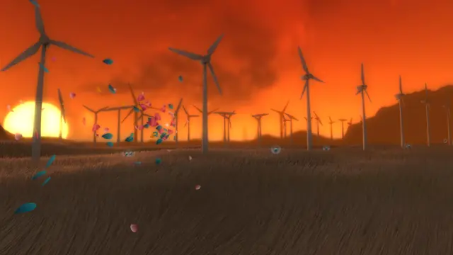
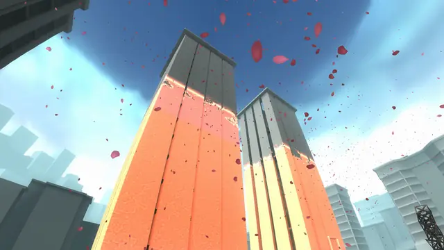
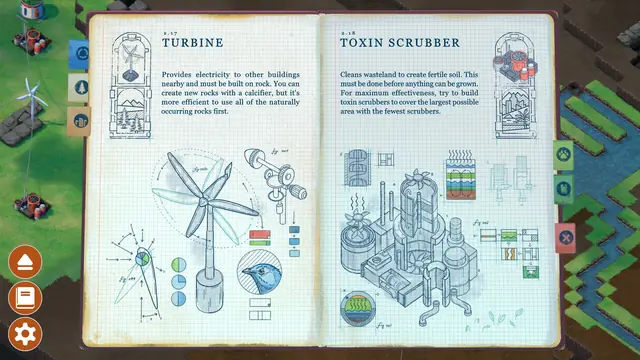
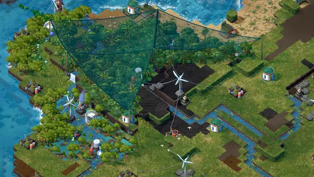
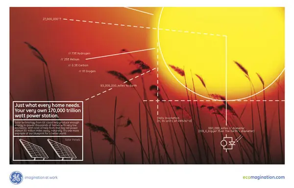
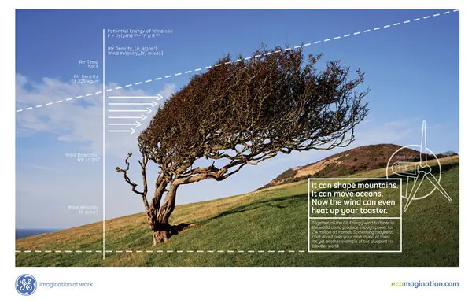
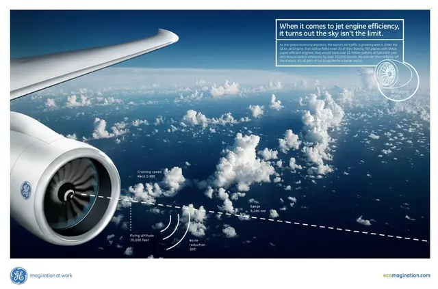
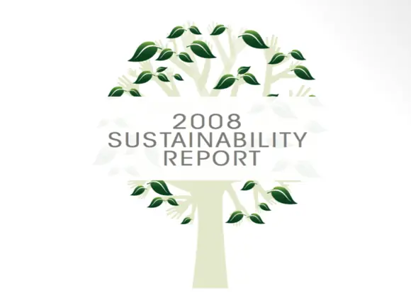
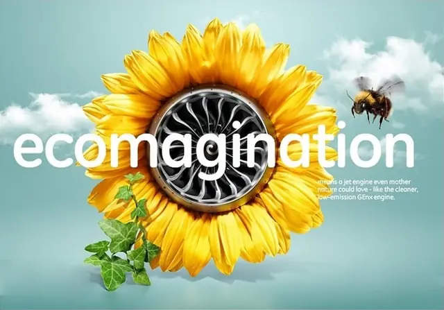
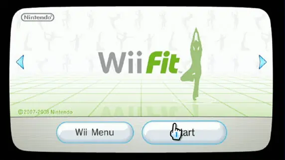
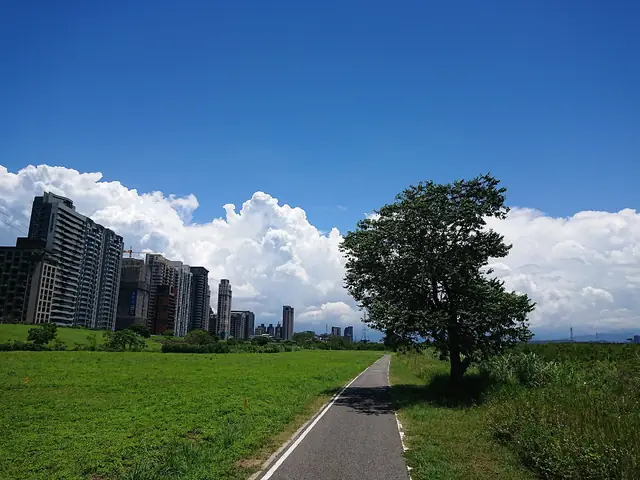
Games
- Wii Fit
Study the very white screens, the late switch to a green motif, and the Plaza's weight and BMI histories.18,11
- Flower
Study how the wind carries a petal from the city into a verdant landscape.12
- Anno 2070
Build for the Ecos: their green buildings blend into the forest, and a healthy island basks in sunlight and a warm, bloomy glow, while polluted Tycoon islands turn grim and dark.28
- Terra Nil
A reverse city-builder: restore a barren wasteland, then recycle your machines into an airship and leave.13
Film, art and more
- GE Ecomagination
Study the print ads: a tree growing out of a smokestack, and jet engine coils that echo a seashell.14
- An Inconvenient Truth
Study it alongside the adverts of the same year.
- Planet Earth
The first time audiences could watch some of the world's rarest animals in their habitats in high definition.9
- WALL-E
A visual parallel. Sofi Lee picks its robot EVE, whose status lights glow with a plant icon, as perhaps the most Frutiger Aero character ever.3
- Consumer Aesthetics Research Institute: Frutiger Aero
The research collective whose member Sofi Lee first identified Frutiger Aero.2
Sources
- 1What Frutiger Aero teaches us about niche internet aesthetics
- 2What is frutiger aero, the aesthetic taking over from Y2K?
- 3Frutiger Aero: the Windows screen saver design trend taking TikTok by storm
- 42004 Logo Trend Report
- 5A new wave in video games
- 62003 Logo Trend Report
- 7GE Launches Ecomagination to Develop Environmental Technologies; Company-Wide Focus on Addressing Pressing Challenges
- 8It's Getting Crowded on the Environmental Bandwagon
- 9Who wrote the Planet Earth soundtrack – and where can you watch the latest episodes?
- 10Logotrend 2007: Leaves
- 11Iwata Asks: Wii Fit, Vol 4: A Wii Board with a Tail
- 12Jenova (Xinghan) Chen, Flower, 2009
- 13This Video Game Prioritizes Restoring An Ecosystem Over Profits
- 14Little Green Men
- 15Out to Launch
- 16'Beige sustainable design is cringe': the key to authentic eco branding
- 17Terra Nil is a serene game about leaving nothing but nature in your wake
- 18Iwata Asks: Wii Fit, Vol 4: Gentle Encouragement for Hard Workers
- 19Environment
- 20Petal Power: Flower Seeds the Winds of Change
- 21Graphics.RenderMeshInstanced
- 22Optimization using MultiMeshes
- 23Chapter 7. Rendering Countless Blades of Waving Grass
- 24Iwata Asks: Wii Fit, Vol 1: A New Creation
- 25Interview: A Beautiful Flight - Creating The Music For Flower
- 26Industries, Not Individuals Will Save the Earth
- 27Planet Earth II: Sigur Rós share new version of 'Hoppípolla' for TV series
- 28Review: Anno 2070